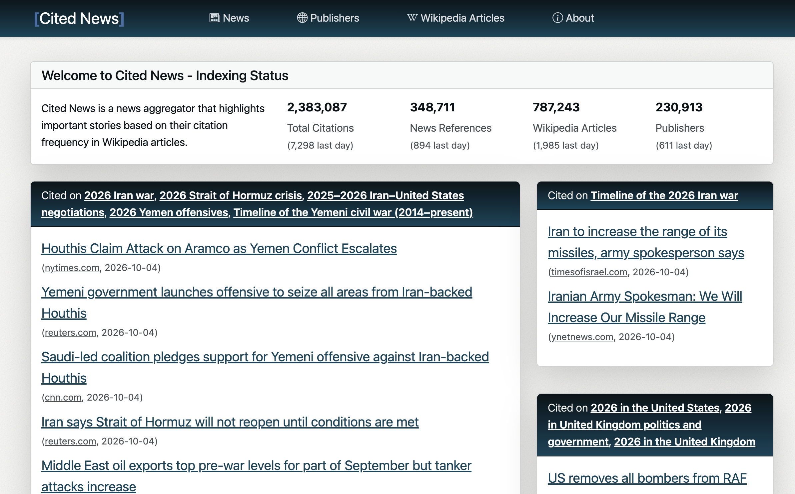
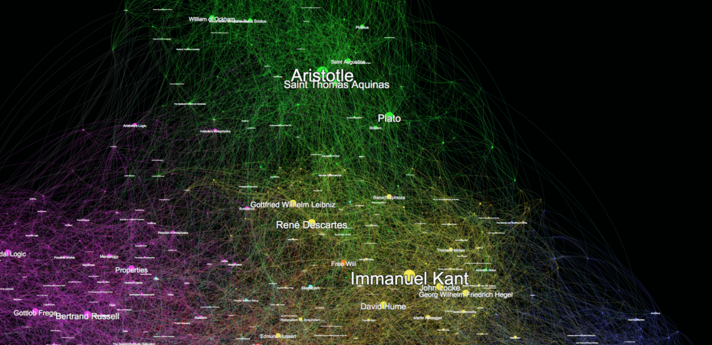
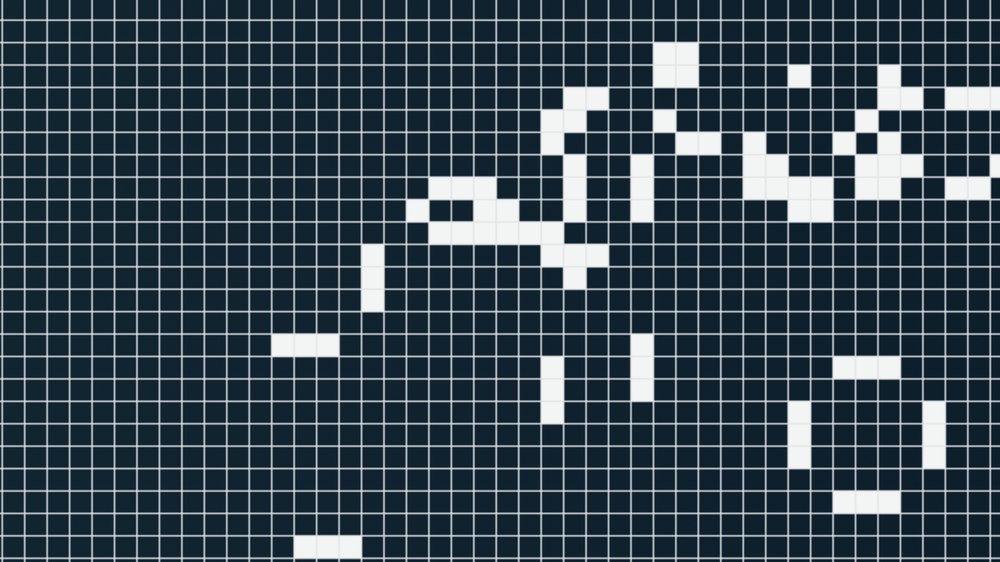

Cited News
A news aggregator that ranks stories by Wikipedia citations rather than social media popularity.

I’m Torstein Saltvedt. This is a collection of things I’ve built and written, mostly about making information easier to find, explore, or get hold of. And a Game of Life implementation because cell automata are cool.
You can email me at: torstein.saltvedt@gmail.com
You can find me on GitHub.
A news aggregator that ranks stories by Wikipedia citations rather than social media popularity.

Explore a graph of how all the entries in the Stanford Encyclopedia of Philosophy relate to one another. Built using Ruby and Gephi.

An old (2017) experiment to learn Opal, a Ruby to JavaScript transpiler, by implementing Game of Life.

(Til deg som er leder: - Ikke vent på at avvik og sårbarheter rapporteres, let etter dem)
(Krever åpenhet om rettskildene og ber om innsyn hos Lovdata)
(Noe har gått riv ruskende galt. Dette handler striden mellom Lovdata og Rettspraksis.no om)